Explore Stanford
Stanford's Response to
COVID-19
Stanford is implementing a
phased recovery of university operations.
We
are currently in Stage 3 of the restart process.
Stanford News
The latest stories from Stanford
IN THE SPOTLIGHT
Stanford celebrates 13 women’s history makers
SOCIAL SCIENCES
School closures intensify gentrification in Black neighborhoods nationwide
MEDICINE
The impact of income gaps on children’s health
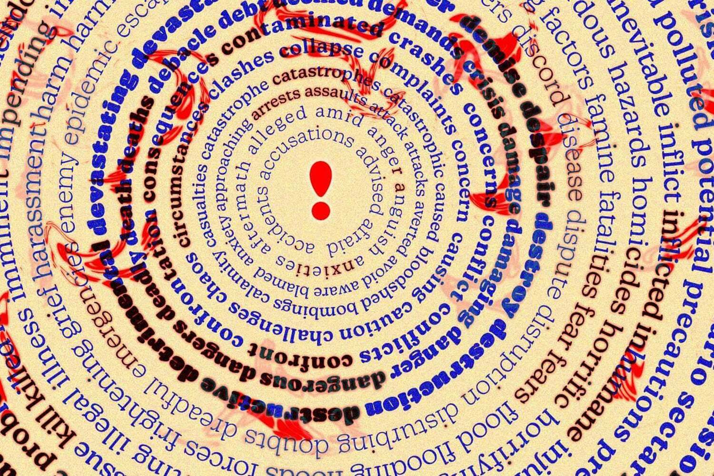
SOCIAL SCIENCES
Threatening language can be contagious. This new tool tracks its spread
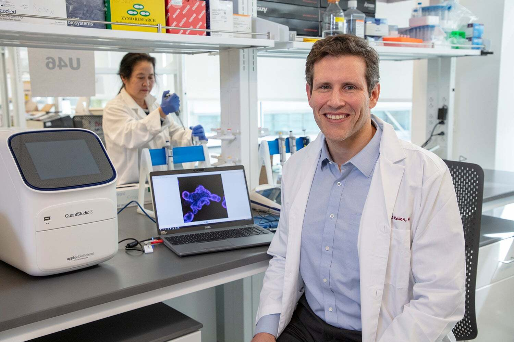
MEDICINE
Stanford Children’s Health launches
new Center for Pediatric IBD and Celiac Disease with $70 million donation
UNIVERSITY AFFAIRS
Stanford transitions to 100 percent renewable electricity as second solar plant goes online
Stanford Events
What’s happening on campus
LECTURE /PRESENTATION
/TALK
Voices from Ukraine
Academics
Preparing students to make meaningful
contributions to society as
engaged citizens
and leaders in a complex world
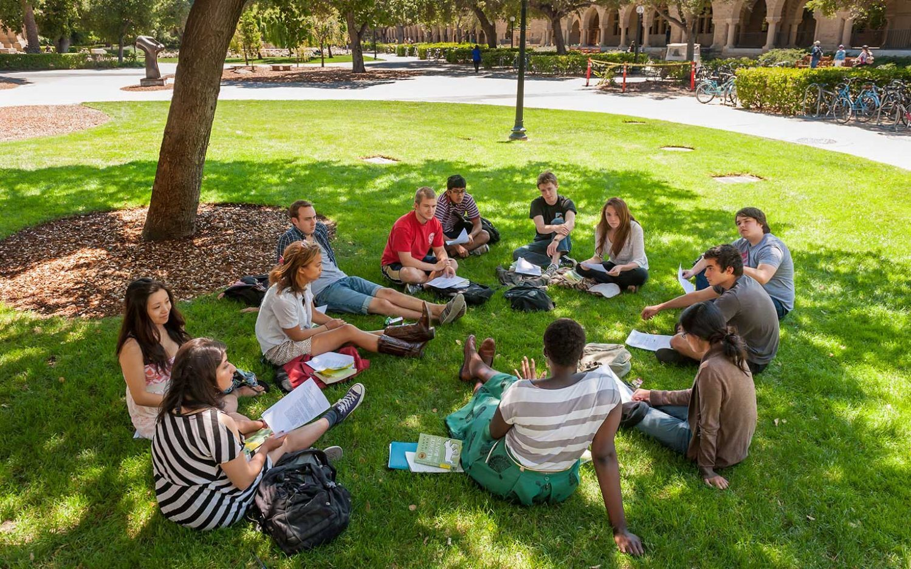
Undergraduate Education
Rich learning experiences that provide
a broad
liberal arts foundation and deep
subject-area expertise
Undergraduate Education
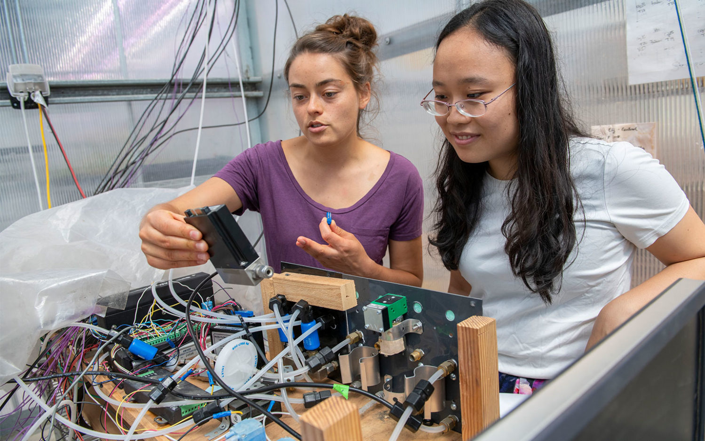
Graduate Education
Unsurpassed opportunities to participate
in the
advancement of entire fields of knowledge
Graduate Education
Lifelong learning
Continuing adult education,
executive and
professional programs, and programs for
K-12 students
Programs for Lifelong Learning
Seven schools in which to pursue your passions
Research
A culture of collaboration that drives
innovative discoveries vital to our
world, our health and our intellectual life
18 Institutes
cross interdisciplinary boundaries
20 Libraries
hold over 9.5 million volumes
$1.93 Billion
sponsored research budget
Stanford research for a better world
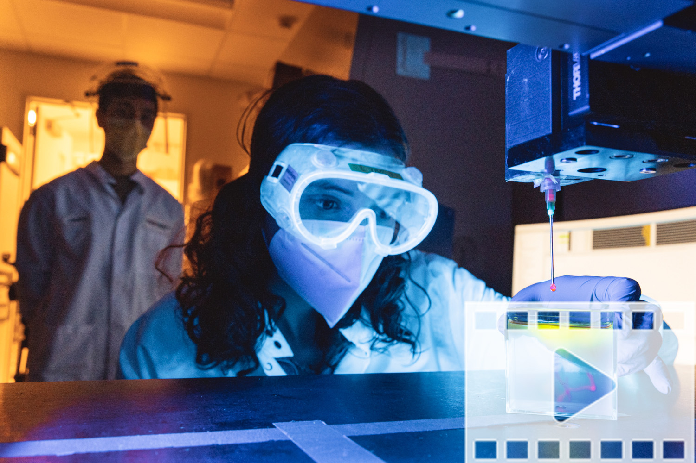
SCIENCE & TECHNOLOGY
Building a heart, one layer at a time
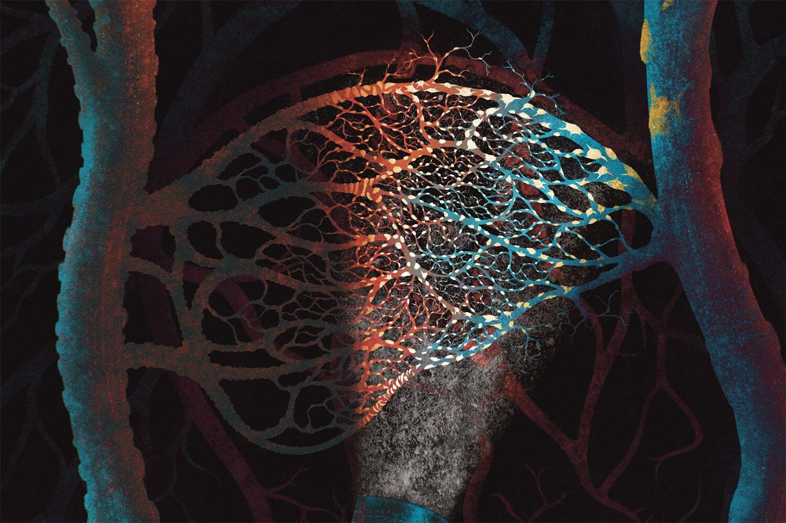
SCIENCE & TECHNOLOGY
Alzheimer’s risk genes linked
to brain
vasculature by
new genetic atlas
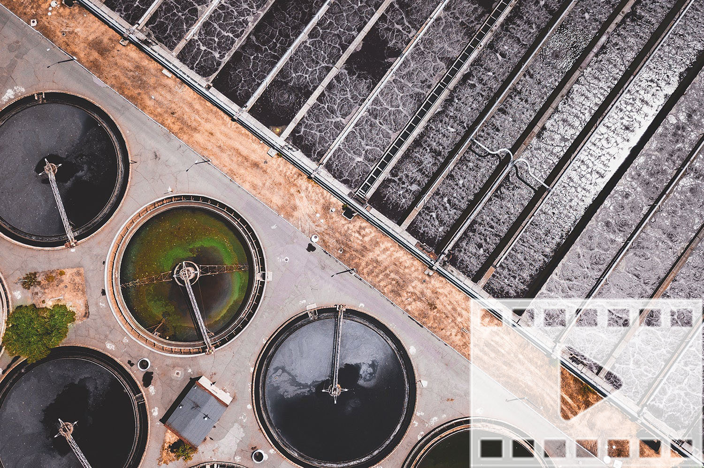
SCIENCE & TECHNOLOGY
Transforming sewage
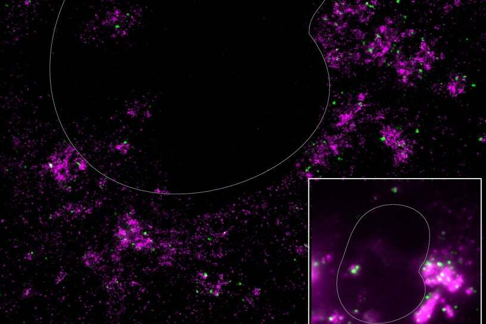
SCIENCE & TECHNOLOGY
Understanding wildfire season
Health Care
Caring for people and advancing
human health through innovative
research, education
and health care
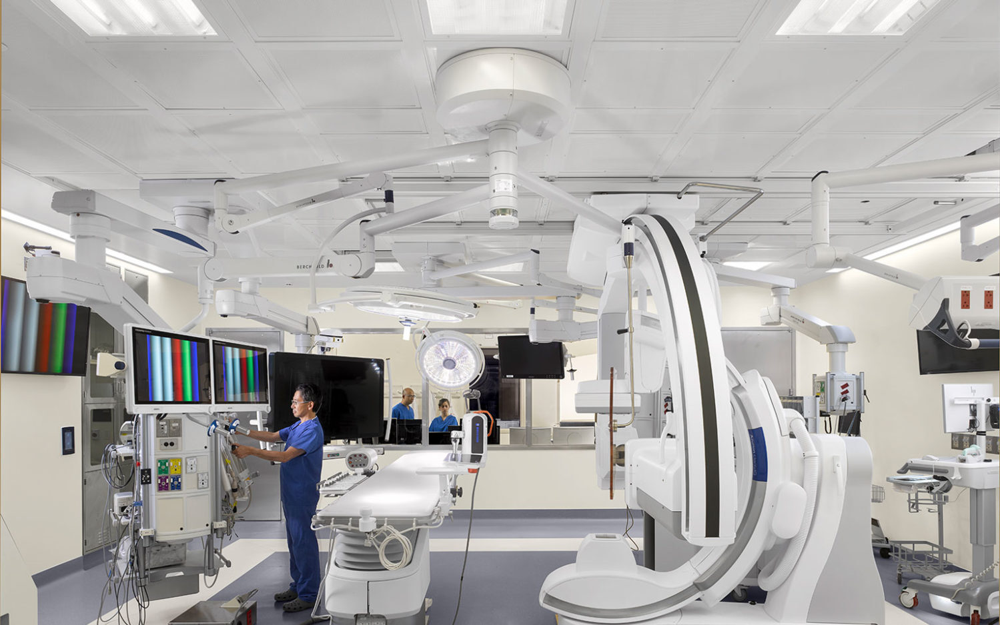
Stanford Health Care
Our multidisciplinary approach delivers
unparalleled care for each patient’s
unique needs, coordinating expertise
with the most advanced technology.
Stanford Health Care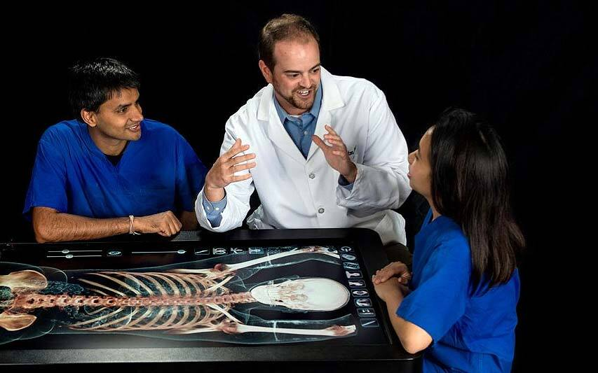
Stanford Medicine
Comprised of our biomedical research,
education and clinical enterprises,
Stanford
Medicine is leading a worldwide revolution
in precision health.
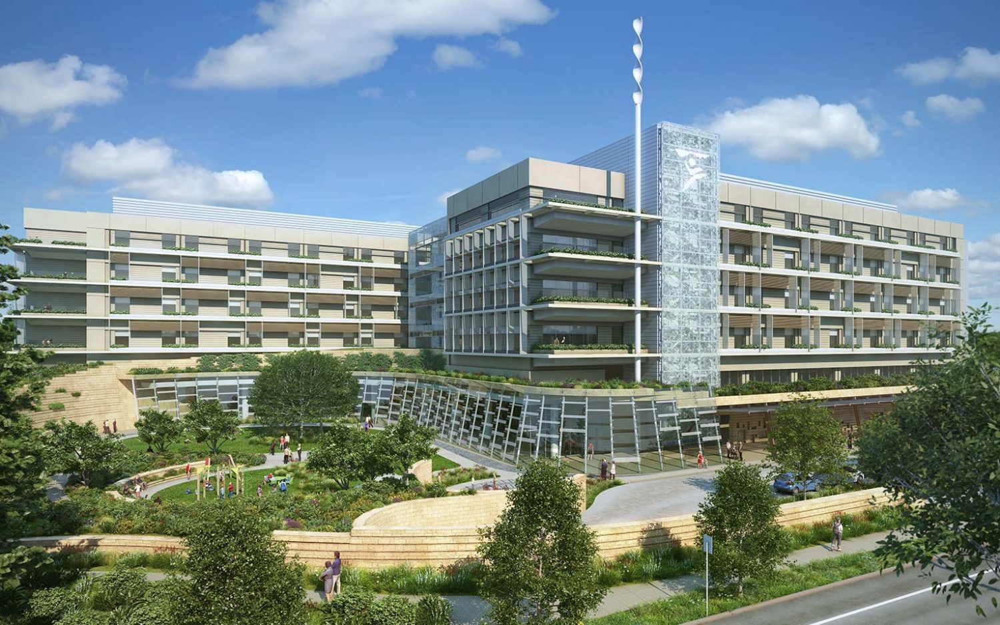
Stanford Children's Health
The only health care network in the
Bay Area – and one of the few
in the
country – exclusively dedicated to
pediatric and obstetric care